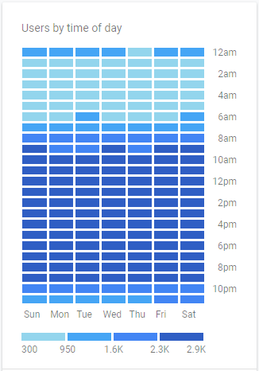

Rangkuman Data Ultimagz 2019
Pada awal Maret 2020, kami melakukan pengumpulan data lalu lintas (traffic) situs Ultimagz sepanjang tahun 2019.
Kami juga melakukan explanatory analysis pada beberapa metrik/variabel yang menurut kami perlu dipertimbangkan sebagai aspek yang penting untuk mendorong kinerja konten pada situs web Ultimagz.
Berikut hasil rangkuman serta analisa data yang telah kami buat:

Kami mengumpulkan jumlah artikel yang telah terbit di situs Ultimagz per bulannya di sepanjang tahun 2019. Jumlah yang kami dapat adalah sebagai berikut:
Total keseluruhan artikel berjumlah 623 artikel.
Jumlah artikel terbanyak ada pada bulan Februari, sedangkan jumlah artikel paling sedikit ada pada bulan Juni dan Desember.
Setelah itu, kami melakukan pengumpulan data keseluruhan tayangan artikel perbulannya di sepanjang tahun 2019. Hasil yang kami dapat adalah sebagai berikut:
Jumlah tayangan artikel terbanyak ada pada bulan Agustus, sedangkan jumlah tayangan artikel paling sedikit ada pada bulan Januari.
Total keseluruhan tayangan artikel berjumlah 672,645 tayangan.
Sepanjang tahun 2019, diketahui bahwa sub-konten terbanyak per bulan yang dipublikasi beserta dengan jumlahnya antara lain:
Sub-konten yang paling sering dipublikasi di web Ultimagz adalah sub-konten Hiburan, Event, dan Review.
Selama 2019, kami menemukan rata-rata penayangan artikel perbulan adalah sejumlah 1843, kami pun menemukan adanya 3 artikel yang memiliki jumlah tayangan yang melebihi rata-rata dari artikel lainnya dalam sehari.
3 artikel dengan jumlah tayangan terbanyak dalam sehari.
1). Kalimat Ucapan yang Akrab di Telinga Saat Imlek, Apa Artinya? - 5 Februari 2019

Pada tanggal 5 Februari 2019, bertepatan dengan hari raya Imlek, artikel ini tembus 3556 tayangan dalam sehari.
2). Sexy Killers: Batu Bara, Politik, dan Kepentingan Elit - 16 April 2019

Pada tanggal 16 April 2019, tepat dua hari setelah film dokumenter Sexy Killers dirilis di YouTube, artikel ini tembus 4020 tayangan dalam sehari.
3). BEM UMN Sebut Tidak Miliki Orientasi Khusus terhadap Kontroversi RKUHP - 18 September 2019

Pada tanggal 18 September 2019, bertepatan dengan berlangsungnya kontroversi mengenai RKUHP, artikel ini tembus 5027 tayangan dalam sehari.
Setelah melakukan pengumpulan data terkait konten, selanjutnya kami melakukan pengumpulan data terkait jumlah pembaca artikel Ultimagz. Kami membagi jenis pembaca ke dalam dua tipe, yaitu pembaca baru dan pembaca lama. Hasil yang kami dapat adalah sebagai berikut:
Pembaca Ultimagz lebih dominan kepada pembaca lama, yaitu pembaca yang sebelumnya sudah mengetahui tentang situs Ultimagz.
Lalu kami coba untuk menelusuri terkait kanal lalu lintas yang paling sering digunakan oleh pembaca untuk mengakses situs Ultimagz.
Pembaca Ultimagz lebih banyak mengakses/menemukan situs Ultimagz dari pencarian di Google.

Hal ini sebenarnya sedikit janggal, dikarenakan pembaca Ultimagz lebih dominan kepada pembaca lama yang seharusnya lebih banyak mengakses melalui tautan secara langsung.
Tetapi tidak menutup kemungkinan juga, pembaca yang mencari/menemukan situs Ultimagz di Google memang adalah pembaca lama.
Media - media sosial yang paling berkontribusi antara lain adalah:
Situs Ultimagz lebih sering muncul di platform media sosial Twitter, disusul oleh Instagram dan Facebook.
Masih pada analisa pembaca, kami mengumpulkan data terkait perilaku pembaca (behavior) yang dimulai dari waktu-waktu paling sering dimana pembaca mengakses situs Ultimagz. Hasil yang kami dapat adalah sebagai berikut:
Pembaca Ultimagz lebih banyak menghabiskan waktu untuk membaca artikel Ultimagz pada pukul 8 malam hingga pukul 12 malam.
Setiap bulannya, kami juga menganalisa hari dimana pembaca Ultimagz paling sering mengunjungi situs Ultimagz, hasilnya antara lain adalah:
Pembaca Ultimagz paling sering mengunjungi Ultimagz pada hari Selasa dan Sabtu.
Selain itu, kami pun menganalisa rata-rata durasi pembaca dalam membaca artikel Ultimagz, dari data yang berhasil dianalisa, kami mendapati bahwa rata-rata durasi pembaca dalam membaca satu artikel Ultimagz adalah selama 50 detik.
Lalu, kami mencoba untuk menganalisa pembaca berdasarkan gendernya.
Pembaca Ultimagz lebih didominasi oleh gender perempuan, sebanyak 63% . Sedangkan gender laki-laki sebanyak 37% .
Selanjutnya, kami menganalisa pembaca berdasarkan umurnya.
Pembaca Ultimagz lebih banyak didominasi oleh pembaca dengan rentang usia 18 hingga 24 tahun.
Kemudian, kami menganalisa pembaca berdasarkan lokasi mereka masing-masing.
(Data ini merupakan data 10 kota dengan pembaca terbanyak yang ada di Indonesia)
Kota Jakarta berada paling atas. Sebanyak 121,926 pembaca Ultimagz berlokasi Jakarta. Disusul dengan Kota Surabaya dengan 37,731 pembaca.
Lalu kami menganalisa pembaca berdasarkan gawai (device) yang mereka pakai.
Pembaca Ultimagz lebih banyak mengakses situs Ultimagz melalui ponsel , sedangkan sisanya adalah melalui komputer dan yang paling sedikit menggunakan tablet.
Kemudian, kami menganalisa pembaca berdasarkan jenis peramban yang mereka pakai.
(Data ini merupakan data 10 peramban teratas)
Peramban yang paling banyak digunakan oleh pembaca Ultimagz adalah Google Chrome , kemudian disusul dengan Safari.
Sesudah itu, kami menganalisa pembaca berdasarkan jenis sistem operasi yang mereka pakai.
Pembaca Ultimagz paling banyak menggunakan gawai Android, kemudian iOS dan terakhir disusul oleh Windows, Mac dan Linux yang merupakan sistem operasi komputer.
Selain itu, kami juga menemukan sedikit kejanggalan pada data bounce rate situs Ultimagz selama periode 2019. Kami menemukan kenaikan (pertanda buruk) pada jumlah persenan bounce rate mulai dari awal September hingga Desember. Apa itu bounce rate? Klik di sini.
Pada bulan September, bounce rate Ultimagz naik hingga 50% dari rata-rata 3% di bulan-bulan sebelumnya.
Kami melakukan analisa terhadap kejanggalan ini. Pertama, kami mencoba untuk membandingkan data bounce rate terhadap data tayangan artikel selama periode 2019.
Dari grafik di atas, terlihat jumlah tayangan artikel mulai mengalami penurunan pada bulan September, tepat di saat bounce rate naik.
Untuk membuat asumsi semakin signifikan, kami pun mencoba membandingkan data bounce rate dan tayangan artikel terhadap data jumlah pembaca baru selama periode 2019.
Kenaikan persen bounce rate terjadi akibat adanya penurunan jumlah tayangan serta peningkatan jumlah pembaca baru di bulan September hingga Desember 2019.
Semua analisa yang kami buat berdasarkan data faktual yang terdapat pada Google Analytics Ultimagz. Semoga bermanfaat!